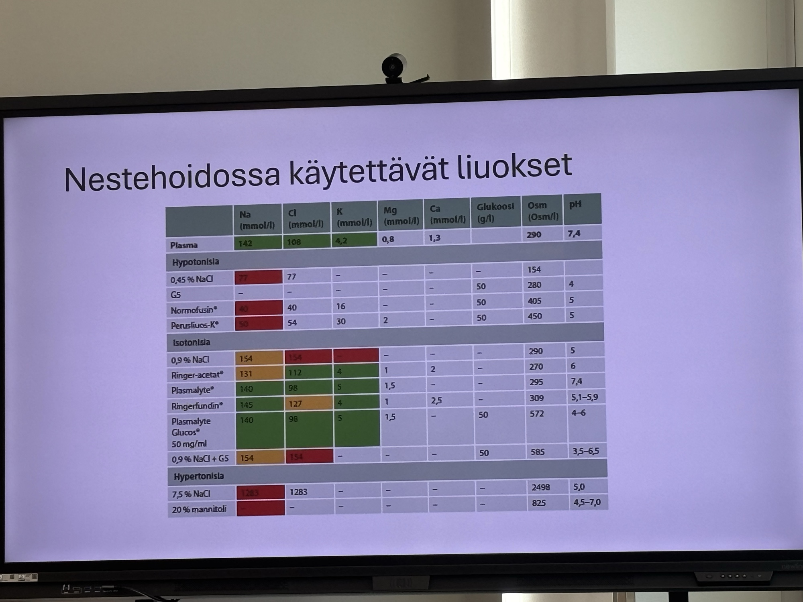
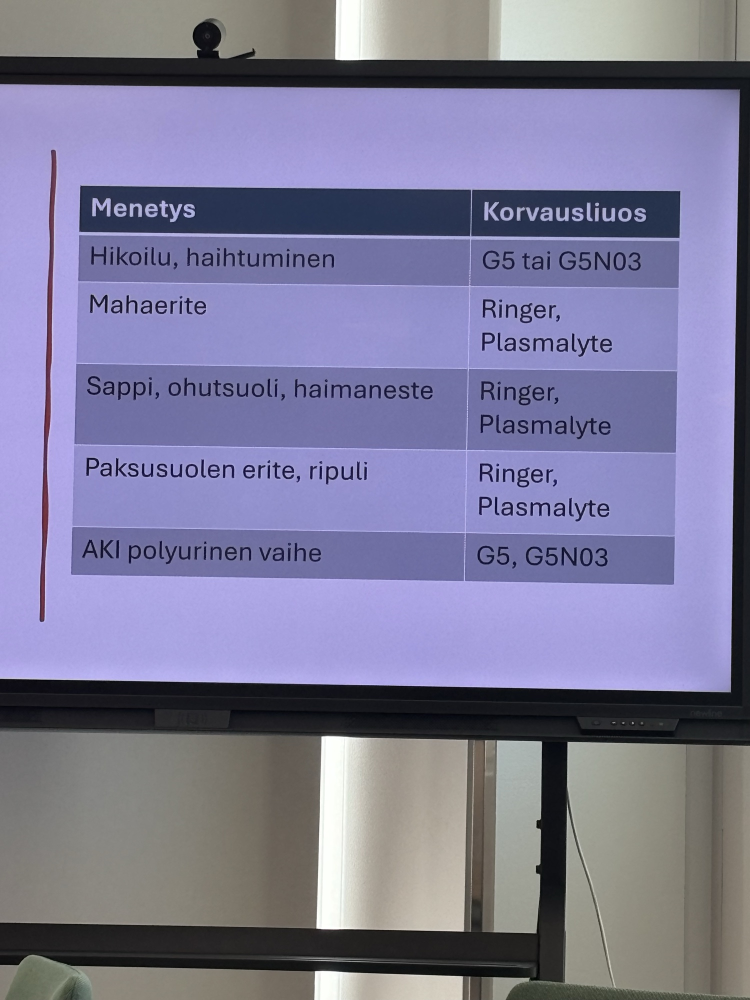
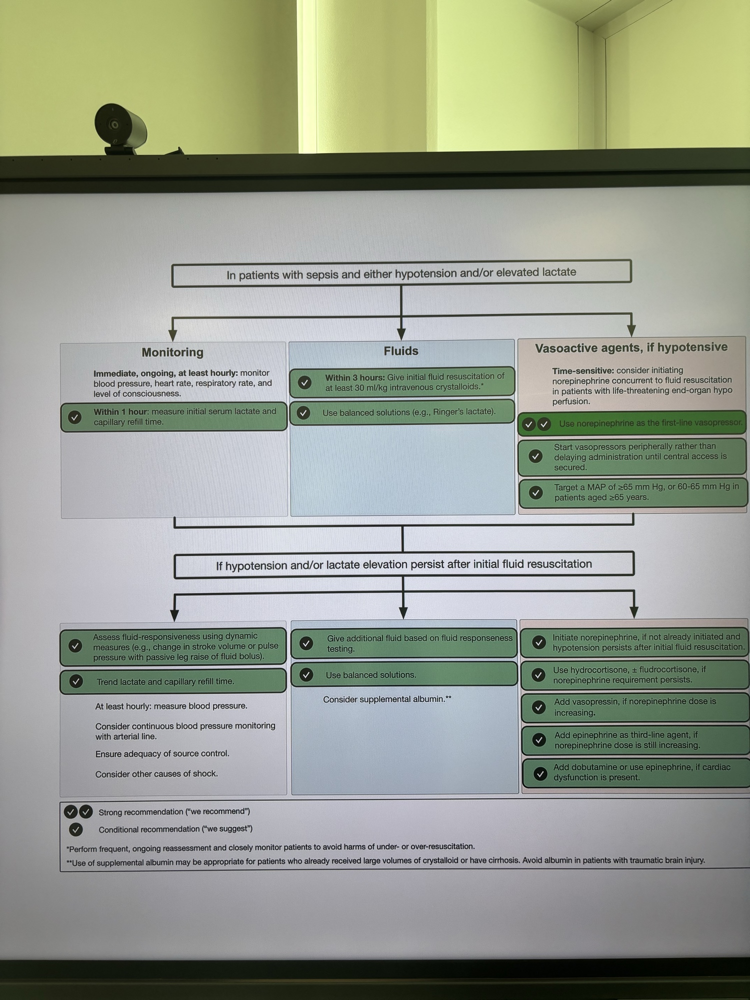

Nestehoito ja ravitsemus
NRS-2002 seula, jos alle 3p, ei vajaaravitsemuksen riskiä. [^1]
Harris-Bendictin yhtälö kalorien arvioinnissa.
Loperamidilla voi hidastaa läpikulkuaikaa. Teduglutidi, eli GLP2 analogi kasvattaa suolta.

[^1]: SSLY 2026 Lapin kokous Sampsa Pikkarainen
Nestehoidossa käytettävät liuokset


[^2]
Sepsis

[^2]
[^2]: el. Koivumäki - 26.5.2026